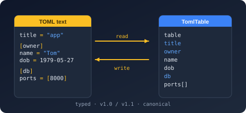

Bodu.Text.Toml
Bodu.Text.Toml is a library for TOML v1.0.0 and v1.1.0, the human-readable configuration format built around typed key/value pairs and tables. It is one of the three Bodu serializers — it shares the architecture described in the family introduction (the serializer / DOM / reader-writer tiers, converters, attributes, naming policies) with its sibling libraries Bodu.Text.Bencode and Bodu.Text.Yaml, so the family vocabulary applies here unchanged. This page covers what is specific to TOML.
The format in one paragraph
TOML is a text format aimed squarely at configuration files: obvious to read, typed without annotations, and table-structured. It has a rich native value model — strings, integers, floats (including inf / nan), Booleans, arrays, tables, arrays of tables, and the four RFC 3339 date-time forms (offset date-time, local date-time, local date, local time). The document root is always a table, so the type you serialize at the root must map to an object; a top-level scalar or array throws.
A rich native value model
Because TOML carries real scalar kinds, most everyday .NET types map without converters:
bool→ boolean;double/float/Half→ float; the integer family → integer (within the i64 range).DateTimeOffset,DateTime,DateOnly, andTimeOnlymap one-to-one onto the four RFC 3339 date-time forms — no string conventions to invent.string,char,Guid,Uri, andVersion→ string;TimeSpan→ the invariant"c"-format string.decimalandbyte[]have two representations each, selected on the options: TomlDecimalHandling chooses between a native (binary64-bounded) float and a lossless string, and TomlByteArrayHandling chooses between an integer array and a Base64 string.
TOML has no null, so a null member is omitted on write by default. The full per-type catalog lives in the type-mapping table and the built-in converter catalog.
Spec versions
TomlSpecVersion on the options selects the grammar the reader enforces. The default is strict v1.0.0; opting in to v1.1.0 additionally accepts:
- the
\e(escape, U+001B) and\xHH(two-hex-digit) string escapes; - time values written without seconds (
09:30rather than09:30:00); - inline tables that span multiple lines and carry a trailing comma.
The version affects parsing only. The writer always emits output valid under both versions, so produced documents never lock consumers into the newer grammar — the SpecVersion property on the writer options is obsolete and ignored.
Diagnostics with positions
TOML files are edited by hand, so parse failures must point at the offending line. A malformed document raises TomlFormatException carrying the line, column, and byte offset (LineNumber, ColumnNumber, Offset); a document that parses but cannot bind to your type raises TomlSerializationException, which carries the same positions where known plus a Path naming the member that failed to bind.
Headline types
| Type | Purpose |
|---|---|
| TomlSerializer | Serialize to string / IBufferWriter<byte> (UTF-8), or to a Stream via SerializeAsync; Deserialize<T> from string / ReadOnlySpan<byte> / Stream (with DeserializeAsync). |
| TomlSerializerOptions | Converters, naming policy, ignore conditions, SpecVersion, ByteArrayHandling, DecimalHandling, depth. |
| NamingPolicy | Property-name policy: CamelCase, SnakeCaseLower, SnakeCaseUpper, KebabCaseLower, KebabCaseUpper. |
| TomlConverter<T> | Base class for a custom converter over the reader/writer pair; attach one to a member or type with ConverterAttribute. Built-in enum converters: TomlStringEnumConverter and TomlNumberEnumConverter<TEnum>. |
| TomlNode | Mutable DOM — Parse, index, mutate, write back. |
| TomlDocument | Read-only, low-allocation DOM walked through RootElement. |
| Utf8TomlReader / TomlDocumentReader / Utf8TomlWriter | Forward-only, allocation-free ref struct token machines: the source-order lexer, the normalized structural cursor a converter receives, and the writer. |
| TomlFormatException / TomlSerializationException | Malformed input (with line/column/offset) vs a value that cannot bind. |
Common scenarios
| You want to… | Use |
|---|---|
Load an application's .toml configuration into a typed record |
TomlSerializer.Deserialize<T> |
| Emit configuration a human will edit | TomlSerializer.Serialize — canonical output in document order, [PropertyOrder] honored |
| Patch one value in an existing file without a model | TomlNode — index, mutate, write back |
| Inspect a document with minimal allocation | TomlDocument and RootElement |
| Accept TOML v1.1.0 input | SpecVersion = TomlSpecVersion.V1_1 on the options |
Keep decimal values lossless on the wire |
DecimalHandling = TomlDecimalHandling.String |
Where to go next
- Bodu serializers introduction — the shared shape: tiers, converters, attributes, callbacks, naming policies.
- Core concepts — the TOML vocabulary, including the full value-mapping table.
- Getting started — install and the first round trip.
- Using TOML — worked patterns: type mapping, spec-version selection, both DOMs, raw tokens.
- API reference — Bodu.Text.Toml.